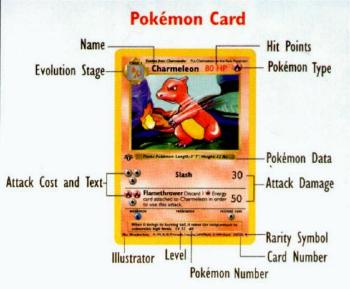

Name-The name of your Pokémon
Evolution Stage-If the card says "Basic Pokémon, you can lay it down on your Bench. If it says "Stage 1: Evolves from _____", you must lay it down on top of the Basic Pokémon with _____'s name. If it says "Stage 2: Evolves from ____", you must lay it down on top of the Stage 1 Pokémon with ____'s name.
Hit Points-How much "life" your Pokémon has. For each damage counter on your card, it loses 10 HP. (In this case, once Charmeleon has 8 damage counters on it, it "faints" and goes into your Discard pile.
Pokémon Type-What "type" of Pokémon it is. See "Weakness" for more information.
Pokémon Data-Just stuff from the Game Boy Pokédex. However, to the left of this stuff there will or won't be a stamp that says "Edition 1". If it does, the card is worth more, because not many of these are made.
Attack Cost and Text-The cost is how much Energy is required to use the attack. The text tell the name of the attack and anything special that happens in it. This will be explained in more detail in the tutorial.
Attack Damage-This tells the damage done to your opponent's Pokémon with the attack. If there is a +,-,X, or ? beside it, do what the text says to figure out the damage.
Illustrator-Who made the picture on the card.
Level-Not important, just what level the Pokémon is at.
Pokémon Number-What number the Pokémon is in the Game Boy Pokédex.
Rarity Symbol-How rare a card is. If there is a circle here, it is a Common card; these are easily found; you get 7 per booster pack. If there is a diamond, it is an Uncommon; these are more sought after; you get 3 per booster pack. If there is a star, it is a Rare; these are the most wanted (and most expensive) cards, there is only 1 per booster pack.
Card Number-What number the card is. The cards are organized by rarity, then by alphabetical order. I use the number to organize the cards in my binder.